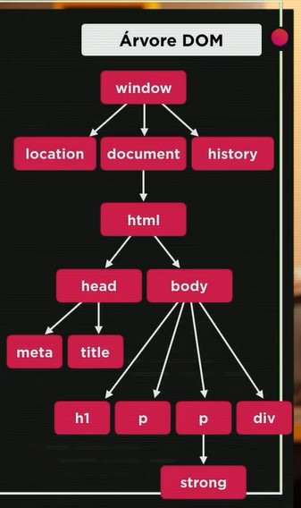

Iniciando estudos DOM
Aqui vai os resultados
Aprendendo a usar o
DOM
em Javascript.

Clique em mim
Testando segunda DIV
Testando terceira DIV
Testando quarta DIV com ID e querySelector
Testando quinta DIV com NAME e querySelector